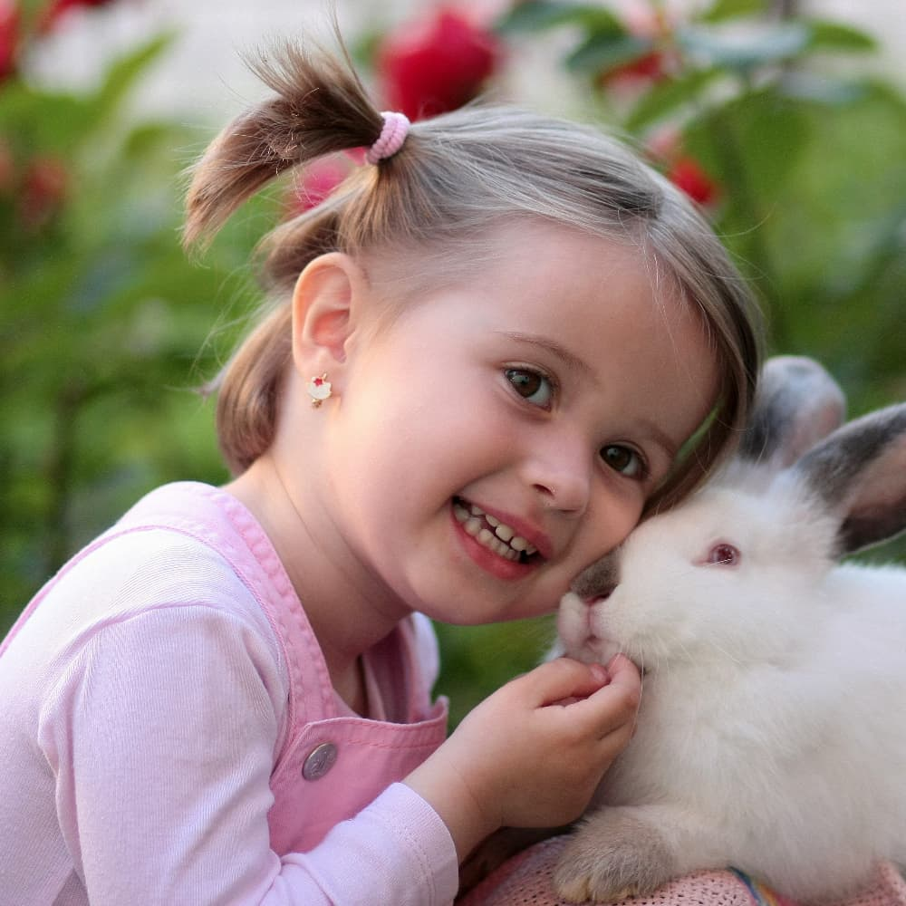

Это было самое начало пути. На этом этапе важно было
проникнуться основами и настроиться на учёбу. И, возможно,
подумать, как новые знания могут повлиять на ваше будущее.
В начале, как правило, много сомнений и переживаний об
осовении новой профессии, так как фундамента не было никакого,
но, ввиду того, что выходы другого не было, пришлось браться
за голову и осваивать неизведанное.
1 спринт: Я — чистый лист
</HTML>
На первых этапах мы работали со страхами и сомнениями, которые
часто испытывают новички. Один из них — страх перед чистым
листом. Это, конечно же, намного сложнее, чем боязнь куска
бумаги. Часто за этим ощущением скрываются более глубокие
вопросы: с чего начать? а вдруг будет слишком сложно? что,
если я не справлюсь?
Первая работа, как и последующие, давались с большим трудом.
Не хватало времени, усидчивости, концетрации, но в голове
всегда была мысль, что если даже первые работы будут даваться
тяжело, то что будет, если я сверстаю этот сайт или
определенный блок ни один раз, а этак десять или двадцать,
по-любому практика, практика и ещё раз приктика даст
результат.
1 спринт: А если не получится?
<CSS>
Первый проект — позади! Но это всё ещё самое начало пути.
Радость могла быстро померкнуть и смениться ожиданием провала.
Или вы, наоборот, могли вдохновиться успехами и поверить в
себя.
Чем дальше я прошел, тем охотнее я отказываюсь от мысли, что
может не получиться, страюсь не давать своему мозгу
альтернативных возможностей, считая, что это, скорее всего,
приведет меня к провалу.
2 спринт: Погоня за идеалом
<desigions>
На этом этапе вы уже достаточно разбирались в основах вёрстки,
чтобы понять, как много ещё впереди. Вы могли попытаться
погнаться за идеалом и понять, что он недостижим. А, может, вы
вовсе и не подвержены перфекционизму и вместо того, чтобы
сделать идеально, старались просто сделать.
Самое главное для меня не погоня за идеалом, а понимание его:
из чего состоит, какими путям можно достигнуть, какими
навыками нужно для этого обладать. Чем дальше проходит курс,
тем больше понимание - это радует.
2 спринт: О тех, кто рядом
care
Всё это время вы были не одиноки (хотя, возможно, иногда и
чувствовали, что одни против целого мира). Вас окружали
одногруппники, команда сопровождения и просто близкие люди,
которым можно пожаловаться, если очередной макет просто так не
поддавался. Осваивать что-то новое легче, когда рядом есть
единомышленники, не правда ли?
Когда ты в окружении людей, которые верят в тебя, и будут
поддерживать независимо от твоих результатов, то, конечно,
желание и стимул повышается, но, к сожалению или счастью, не
каждому предоставляется такая возможность.
3 спринт: Обходные стратегии
<support>
На этом курсе вы постоянно решали разные задачи. В какой-то
момент вам могло показаться, что решения просто иссякли.
Значит, пришло время посмотреть на задачу под другим углом.
Это один из моих любых спринтов, так как по выполонении
проектной работы, появилась некая уверенность в том, что при
должном старании и успехе результат неминуем.
3 спринт: Когда опускаются руки
<lifees-style: none>
Во время учёбы часто возникает чувство, когда не знаешь, за
что хвататься. Вроде и проектную пора сдавать, и задачи
хочется порешать, и в теории получше разобраться, и жизнь не
забыть пожить. В такие моменты очень нужна концентрация.
Вспомните, откуда вы её черпали.
Одно я понял наверняка, что руки обязательно будут опускаться
и не раз, но фишка в том, чтоб найти силы вовремя их поднять.
«Сейчас я здесь»
<experience>
Сейчас вы уже очень много знаете о вёрстке. Но это только
начало. Во-первых, впереди ещё много материала про
«красотищу». Во-вторых, с окончанием курса учёба не
заканчивается. Вёрстка — это целый мир. И этот мир постоянно
меняется. Познать его полностью не получится, но это тот
случай, когда важен сам процесс познания. Ведь часто путь — и
есть результат.
Чем больше я познаю, тем больше понимаю насколько неполноценны
мои навыки, но это как раз таки и подталкивает к освоению
материала.